从活动到体验：
基于自然语言处理的幸福感模型
负责人：庄凌云 贾松霖
指导教师：王非
2025.06.12
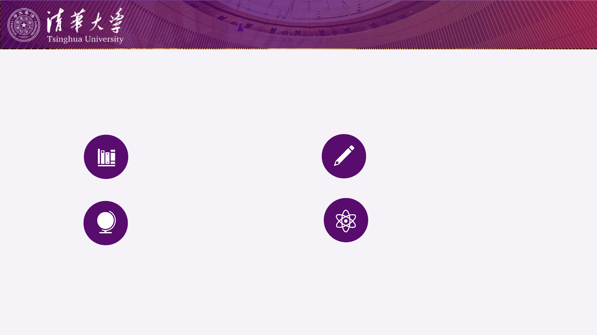
目录
研究背景
文献综述
问题提出
研究设计与进展
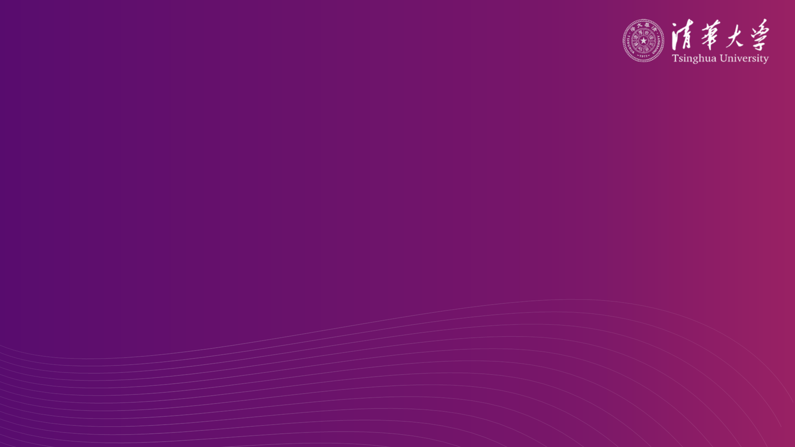
01 研究背景
研究背景 文献综述 问题提出 研究设计 研究结果
研究背景
幸福的哲学根源与文化差异
"什么是幸福？"这一古老的哲学命题自人类文明伊始便困扰着思想
家们。
不同文化下的先哲，对幸福有着不一样的理解：
西方古典幸福观
西方古典哲学将幸福视为个体理性的完善和德性的实现。幸福是一
种活动状态，强调通过理性思考和道德实践达到人生的最高善。
核心特征：个体主义、理性主义、自我实现
东方古典幸福观
东方古典哲学将幸福与道德修养、社会和谐、人际关系紧密结合。
幸福不仅是个人的精神状态，更是社会关系中的道德实现。强调通
过修身养性和履行社会责任获得内心安宁。
核心特征：集体主义、关系导向、道德修养
“幸福（Eudaimonia）即是灵魂依德性而行的活动。
”
——《尼各马可伦理学》
“学而时习之，不亦说乎？有朋自远方来，不亦乐乎？
”
——《论语·学而》第一章
亚里士多德
孔子
1
研究背景 文献综述 问题提出 研究设计 研究结果
研究背景
较高的幸福已经被论证对人们生活的方方面面产生影响，如：
• 个人健康：它与更强的免疫功能、更长的预期寿命显著相关 (Danner et al.,
2001; Chida & Steptoe, 2008)；
• 职业发展：幸福的个体不仅展现出更高的生产力、创造力和工作满意度，其
收入水平也普遍更高 (Harter et al., 2020; Lyubomirsky, King, & Diener,
2005)。
• 社会互动：幸福者倾向于建立更广阔、更稳固的人际关系网络，并表现出更
多的亲社会行为 (Lyubomirsky et al., 2005)；
这些跨领域的实证研究共同揭示，幸福是促进个体全面发展与社会繁荣的关键
驱动力
2

02 文献综述
研究背景
文献综述 问题提出 研究设计 研究进展
文献综述
现代幸福感研究的兴起与重要性
1984年
2011年
提出者：
Diener (1984)
幸福定义：
"个体对自身生活质量的主观评价"
核心维度：
• 生活满意度 - 对生活的认知评价
• 积极情感 - 愉快、快乐等正面情绪
• 消极情感 - 焦虑、抑郁等负面情绪
（低水平）
测量量表：
• 生活满意度量表
• 积极与消极情感量表
• 正负面体验量表
PERMA模型
PERMA Model
提出者：
Seligman, MEP (2011)
幸福定义：
"福祉不是单一的、一维的概念，而
是一个由五个可测量、可培养的核
心要素构成的多维度框架"
核心维度：
• 积极情绪 - 愉悦、感激、宁静等
• 投入 - 专注、心流状态
• 关系- 社会连接和爱
• 意义 - 人生目标和价值感
• 成就 - 成功和成就感
• 测量量表：
• PERMA量表
Diener, E. (1984). Subjective well-being.
Psychological Bulletin
, 95(3), 542-575.
Seligman, M. E. (2011). Flourish: A
visionary new understanding of happiness
and well-being. Simon and Schuster.
主观幸福感理论
Subjective Well-Being
3
1985年
提出者：
Deci, EL, & Ryan, RM (1985)
幸福定义：
"当三个基本心理需求得到满足时，个体体
验到的幸福感和最优功能状态"
核心维度：
• 自主需求 - 感到行为是自主选择的
• 胜任需求- 感到有效和有能力
• 关系需求- 感到与他人连接和归属
测量量表：
• 基本心理需求满足量表
• 自主支持感知量表
• 内在动机量表
Deci, E. L., & Ryan, R. M. (2013).
Intrinsic motivation and self-
determination in human behavior
. Springer
Science & Business Media.
1989年
心理幸福感理论
Psychological Well-
Being
提出者：
Ryff, C. D. (1989)
幸福定义：
"个体在追求自我实现的过程中，所
展现出的六大积极心理机能状态"
核心维度：
• 自我接纳- 对自己的积极态度
• 个人成长 - 持续发展和自我提升
• 生活目标 - 明确的人生方向和意义
• 环境掌控 - 有效管理外部环境的能力
• 自主性 - 独立思考和自我决定
• 积极关系 - 与他人建立温暖、信任关
测量量表：
• 心理幸福感量表
自我决定理论
Self-Determination Theory
Ryff, C. D. (1989). Happiness is everything, or
is it? Explorations on the meaning of
psychological well-being.
Journal of Personality
and Social Psychology, 57
(6), 1069-1081.
研究背景
文献综述 问题提出 研究设计 研究进展
幸福感量表及维度研究
背景与目的
研究背景
• 幸福感（well-being）已成为政策与学术研究重点
• 幸福感测量泛滥，但缺乏一致性
• 对幸福的定义不一，导致工具众多、难比对
本文动机：
• 系统梳理成人通用幸福感量表及其声称的测量维度
• 探索其维度及理论演变
方法与数据来源
• 数据库 ：MEDLINE, EMBASE, PsycINFO, Cochrane, CINAHL…
• 时间范围 ：1993–2014 （补充手工检索至 2015）
• 检索词 ：well-being measure*, self-report, quality of life
• 纳入标准：成人通用，非疾病/场景专用；英文版本可获取。
最终样本：
• 99 种量表， 196 维度（dimensions）
• 时间跨度 ：1961 (最早) – 2015 (最新)
编码与分析：
• 每个量表提取“维度名称”，专家将196个维度归到 6 大主题。
结果：手工识别的六大维度主题
1.心理幸福感 (Mental) – “情感、认知、心理健康” → 共 ~ 50 个子维度；
2.社会幸福感 (Social) – “社交支持、人际关系、社会融入” → ~ 30 个维度；
3.活动与功能 (Activities & Functioning) – “日常行为、角色功能 → ~ 25 个
维度；
4.身体幸福感 (Physical) – “健康状态、精力、疼痛与不适感” → ~ 20 个维度；
5.精神/信仰幸福感 (Spiritual) – “意义感、信仰、内在满足” → ~ 15 个维度；
6.个人环境因素 (Personal Circumstances) – “经济安全、生活条件、外部压
力” → ~ 10 个维度；
Myles-Jay Linton et al., | BMJ Open 2016
Review of 99 self-report measures for
assessing well-being in adults:
exploring dimensions of well-being
and developments over time
幸福感测量维度整合研究
Linton, M. J., Dieppe, P., & Medina-Lara, A. (2016). Review of 99 self-report measures for assessing well-
beinginadults:exploringdimensionsofwell-beinganddevelopmentsovertime.BMJ open,6(7), e010641.
4
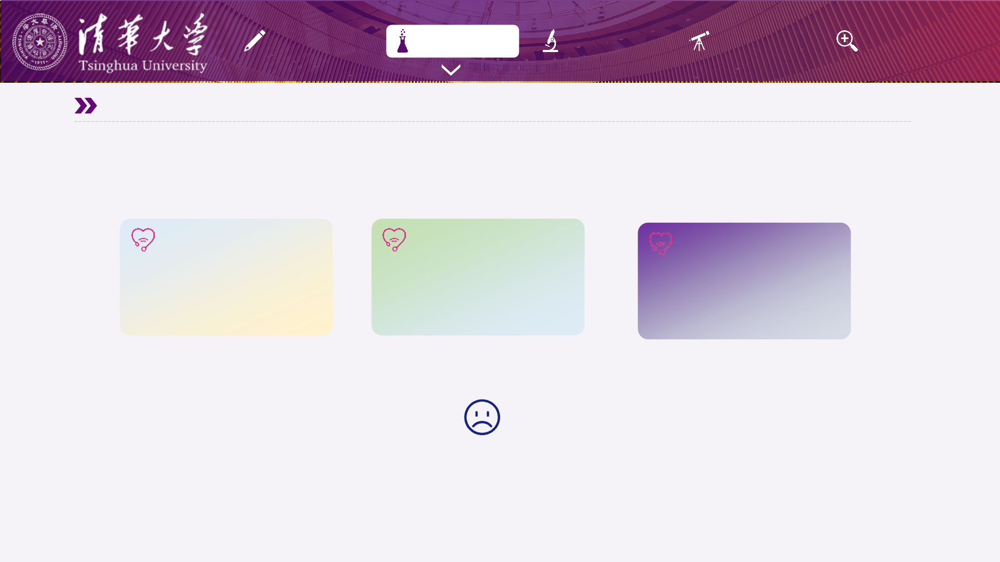
研究背景
文献综述 问题提出 研究设计 研究进展
幸福感测量维度困境
心理测评结果2：
✓ 存在意义：3.2/7 ⚠️
✓ 身体功能：2.8/7 ⚠️
✓ 消极情绪：3.5/7 ⚠️
我该相信哪种测量方法？
我不幸福，我应该做什么？
心理测评结果1：
✓ 社会支持：3.2/7 ⚠️
✓ 积极情绪：2.8/7 ⚠️
✓ 生活意义：3.5/7 ⚠️
心理测评结果3：
✓ 自主需求：3.2/7 ⚠️
✓ 胜任需求：2.8/7 ⚠️
✓ 关系需求：3.5/7 ⚠️
5
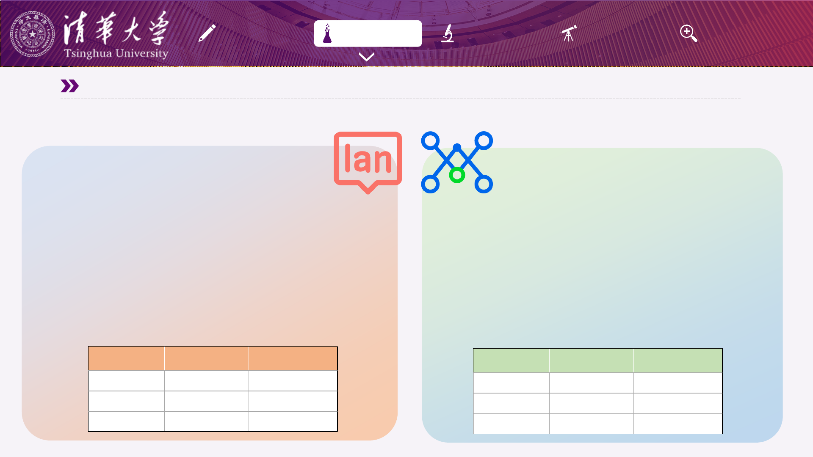
研究背景
文献综述 问题提出 研究设计 研究进展
文献综述
自然语言处理技术革新
传统文本分析 词嵌入技术
概念表征
离散类别标签 连续向量空间
客观性 存在主观差异 结果可复现
维度发现 预设理论维度 自动降维聚类
语义嵌入作为大多数 NLP 应用背后的基础技术，正成
为当代心理学研究的关键工具
基本原理：通过在大规模语料中让模型预测词与其上下
文的共现关系，将离散词语映射为稠密向量
开放式问卷量化：
将受试者回答变为语义嵌入→识别受试者的语义信息
主题建模研究：
通过对嵌入进行降维聚类，实现对大规模语料库的总结
和归纳
AI时代的幸福感研究新机遇
大规模数据的收集
传统问卷研究 大数据
样本规模
100+ 10000+
数据类型 量表评分数据 自然语言
生态效度 实验室/问卷 真实生活场景
大数据众包语料分析，为心理学提供数以万记的文
本用于研究
核心思路：面向真实世界场景，藉由众包平台或线
上服务一次性收集数十万至百万条高生态效度文本
数字足迹量化：
收集某群体语料信息，结合NLP技术挖掘趋势
跨文化比较：
在多种文化情景收集数据，比较不同文化的情绪表
达与价值观
6
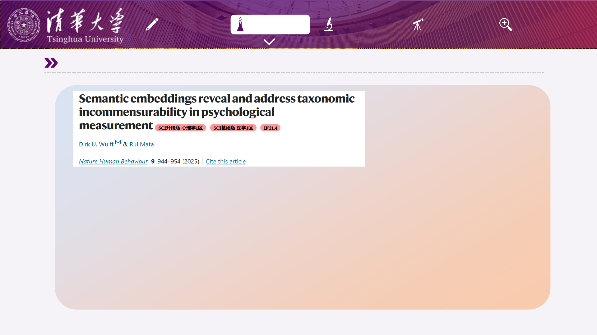
研究背景
文献综述 问题提出 研究设计 研究进展
语义嵌入可以捕捉心理测量属性
• 研究背景：心理学研究中常见的“概念杂乱”，导致同名量表测量不同构念或异名量表测量相同构念
• 方法：
• 语义嵌入构建：收集人格测量量表，对 4,452 个题项、459 条量表和 277 个构念标签，使用微调的预训练模型
生成题项、量表和标签三类向量表征
• 自动化诊断与重组：基于题项、量表、标签两两余弦相似度，设定阈值识别概念混杂
• 核心结果：据设定阈值识别 340 个同名谬误 与 164 个异名谬误
• 结论：微调大语言模型生成的语义嵌入可以准确复现量表的经典心理计量属性，用于自动识别并谬误。
语义嵌入可以捕捉心理测量属性
Wulff, D. U., & Mata, R. (2025). Semantic embeddings reveal and address taxonomic incommensurability in psychological measurement. Nature
Human Behaviour, 1-11.
7
研究背景
文献综述 问题提出 研究设计 研究进展
HappyDB:
十万条众包的幸福时刻数据库
幸福感事件研究
Asai et al., 2018 | LREC
研究贡献
数据规模: 100,000条快乐时刻文本
众包来源: Amazon Mechanical Turk
时间跨度: 24小时 + 3个月回忆期
数据特征
平均长度: 19.66词/条
参与者: 10,843名不同用户
人口统计: 性别、年龄、婚姻、育儿状态
初步分析
9大主题: 人际关系、家庭、食物、工作等
语言现象: 词汇分布、情感表达模式
幸福事件众包数据库与分析
数据实例：
• Today my mom called me and told me of
her plans to visit me on my birthday.
• i arrange a trip with my parents and
went to kashmir
Asai, A., Evensen, S., Golshan, B., Halevy, A., Li, V., Lopatenko, A., ... & Xu, Y. (2018). Happydb: A
corpus of 100,000 crowdsourced happy moments. arXiv preprint arXiv:1801.07746.
8

03 问题提出
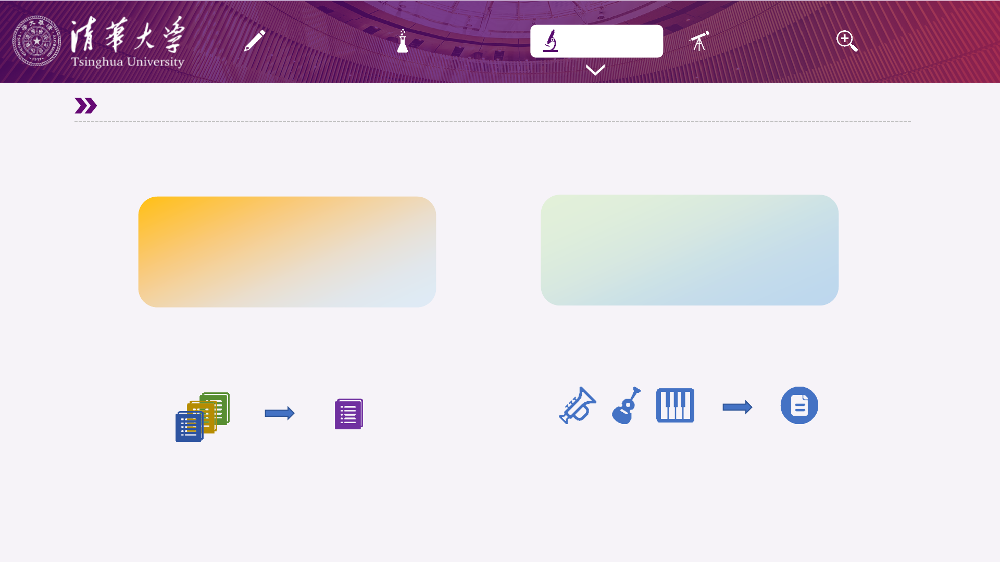
研究背景
文献综述 问题提出 研究设计 研究进展
问题提出
幸福测量核心构念与主要活动的提取
幸福感理论及测量
Linton等人的发现传统幸福感研究不断积累
- 99个测量工具，196个不同维度
- 理论驱动但缺乏统一框架
- 69%的维度仅出现在单一工具中
幸福活动大数据的收集
HappyDB大数据收集，词嵌入等方法突破
- 大规模真实数据收集成为可能
- NLP技术提供了新的分析手段
- 高生态效度数据未被充分利用
我们拥有大量测量幸福感的理论
不充分性：幸福感受多种维度影响，单一测量量表难以完全测量
复杂性：太多测量维度存在冗余，重复，为测量带来负担
我们拥有大量幸福活动的报告数据，具有
高生态效度，尚未被充分利用
幸福测量的核心构念有哪些？
幸福体验模型：了解如何体验幸福
幸福活动的基本类型有哪些？
幸福活动模型：了解什么带来幸福
9
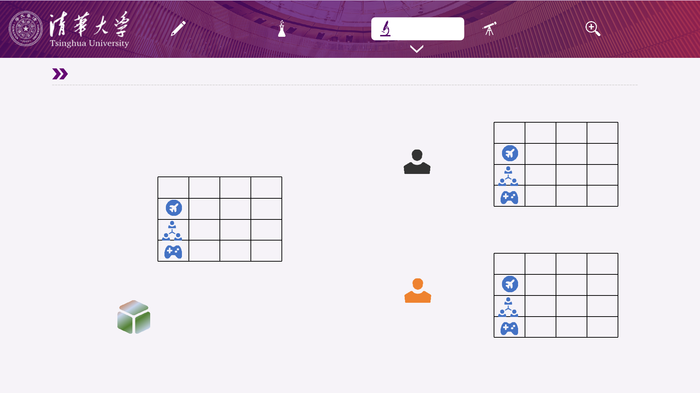
研究背景
文献综述 问题提出 研究设计 研究进展
问题提出
幸福活动-体验模型
DIM1 DIM2 DIM3
3 2 1
1 2 3
2 3 1
幸福活动
幸福体验
DIM1 DIM2 DIM3
3 2 1
1 2 3
2 3 1
DIM1 DIM2 DIM3
1 1 1
2 3 3
3 2 1
文化A人群
文化B人群
获得活动-体验映射关系
幸福活动-体验模型
10
研究背景
文献综述 问题提出 研究设计 研究进展
问题提出
因此，我们提出问题：
如何结合经典幸福感理论和真实幸福经历，测量人类的幸福？
• 研究1：幸福体验模型：幸福感测量核心构念提取
以往研究幸福感的测量维度可以整合为哪些核心构念？
• 研究2：幸福活动模型：真实幸福活动基本类型提取
人们在日常生活中实际体验到的幸福活动可以归纳为哪些基本类型？
• 研究3：幸福活动-体验模型的跨文化比较
不同文化背景的人对幸福的活动-体验模型是否有显著区别？
11
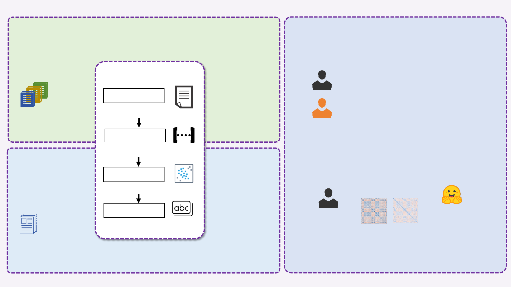
研究一
幸福体验模型：
幸福感测量核心构念提取
幸福感量表
测量维度
(196条)
M类
幸福感维度主题
例如：
• 社会支持
• 情绪控制
• 身体健康
HuggingFace模型
将文本转换为高维嵌入
降维
将高维嵌入降维到低维度
Bertopic主题建模
HappyDB
(10W条)
研究二
幸福活动模型：
真实幸福活动
基本类型提取
N类
幸福感活动主题
例如：
• 与朋友聊天
• 购买新电脑
• 坚持运动
研究三 幸福活动-体验映射关系跨文化比较
研究三中国被试
对N类幸福感主题
进行M维度1-5评分
幸福事件中文嵌入
将N类幸福感主题
和M维度主题
转为embeddings
表征相似性分析
嵌入可代替性验证
召集中国和美国被试
对N类幸福感主题
进行M维度1-5评分
研究问题：中英文被试对"与朋友聊天"
在社会支持维度的评分是否存在差异？
• 中文被试 (n=50)：均值 = 6.2，标准差 = 0.8
• 英文被试 (n=50)：均值 = 5.4，标准差 = 1.1
• t(98) = 4.12, p < 0.001
• 结论：中文被试认为与朋友聊天提供的
社会支持感显著更强
通过RDM的相关系数
判断是否可以用嵌入代替评分
聚类
c-TF-IDF
对每个聚类，提取代表词
对嵌入进行聚类
12
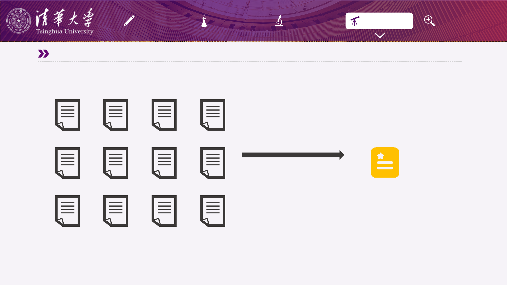
研究背景
文献综述 问题提出 研究设计 研究进展
一组文本数据
潜在的主题
主题建模技术
主题建模（Topic Modeling）是一种自然
语言处理（NLP）技术，用于自动从大量
文本数据中识别和提取潜在的主题结构。
主要方法-主题建模
13
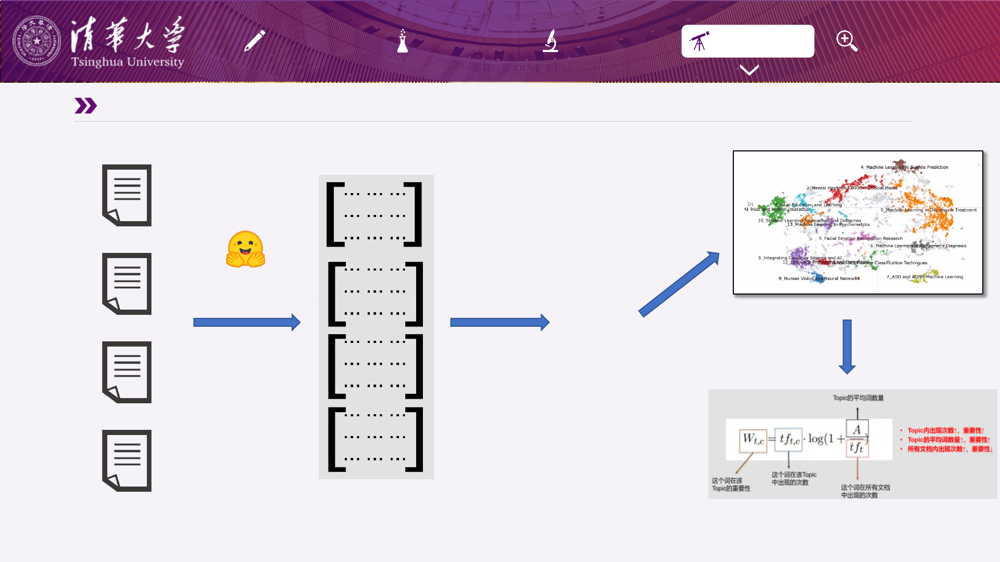
研究背景
文献综述 问题提出 研究设计 研究进展
BERTopic ：基于类的 TF-IDF 程序的神经主题建模
高维embeddings
降维
原始文档
低维embeddings
HuggingFace平台
预训练模型
[···]
[···]
[···]
[···]
聚类
C-TF-IDF
主题关键词提取
根据关键词对主题命名
14
04 研究设计与进展
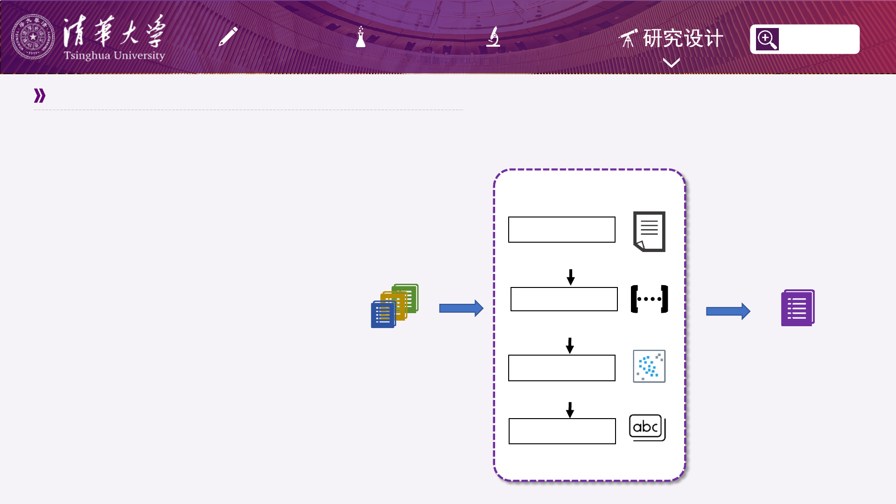
研究背景
文献综述 问题提出 研究设计
研究一 幸福体验模型：幸福感测量核心构念提取
研究进展
数据
数据来源：
Lintond et al.,2016整理的
幸福感测量量表的维度
收集方式：
检索相关文献进行整理
文本数量：
192条（删减4条总体幸福感维度）
HuggingFace模型
将文本转换为高维嵌入
降维
将高维嵌入降维到低维度
Bertopic
聚类
c-TF-IDF
对每个聚类，提取代表词
对嵌入进行聚类
幸福感量表
测量维度
(192条)
幸福感测量
核心构念
(N条，
N<192)
研究假设：
幸福感测量维度可以被少数核心构念概括
研究方法：
BERTopic主题建模
嵌入模型：
stella_en_400M_v5
降维算法与参数：
UMAP_neighbors=15,
UMAP_components = 15
聚类算法与参数：
K-MEANS（N=12）
轮廓系数：
0.4548
15
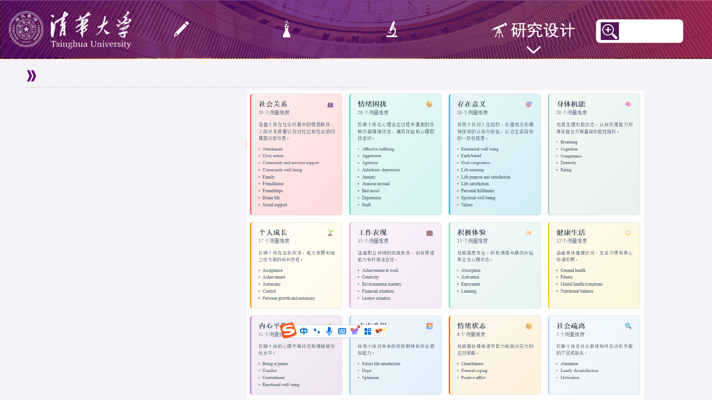
研究背景
文献综述 问题提出 研究设计
研究一 幸福体验模型：幸福感测量核心构念提取
研究进展
主要结果：
• 获得了12个测量维度主题，
• 主题包含维度数量：5-29
• 部分主题与经典理论对应
16
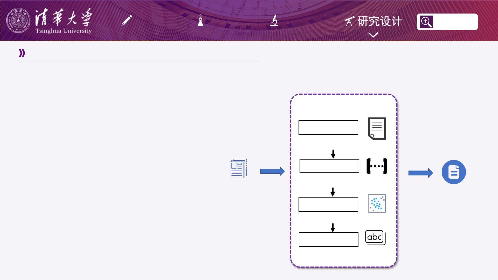
研究背景
文献综述 问题提出 研究设计
研究二 幸福活动模型：真实幸福活动基本类型提取
研究进展
数据
数据来源：
HappyDB开源数据集
收集方式：
通过众包平台收集
提问方式：
what made you happy in the past 24 hours/past 3 months
文本数量：
100316条
HuggingFace模型
将文本转换为高维嵌入
降维
将高维嵌入降维到低维度
Bertopic
聚类
c-TF-IDF
对每个聚类，提取代表词
对嵌入进行聚类
幸福感活动
主要类型
(M条，
M<10W)
HappyDB
(10W条)
研究假设：
大量幸福感活动可以整合为少数活动类型
研究方法：
BERTopic主题建模
嵌入模型：
stella_en_400M_v5
降维算法与参数：
UMAP(UMAP_neighbors=20,
UMAP_components = 20)
聚类算法与参数：
HDBSCAN(HDB_size = 500,
HDB_samples = 5)
轮廓系数：
0.5952
17
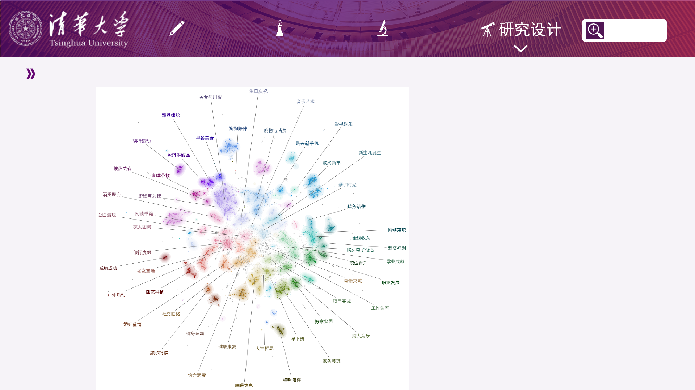
研究背景
文献综述 问题提出 研究设计
研究二 幸福活动模型：真实幸福活动基本类型提取
研究进展
主题建模2维可视化结果
18
• 每一个点是一件幸福感活动
• 经过聚类，相近的点形成了簇
• 共识别出50种不同的主题
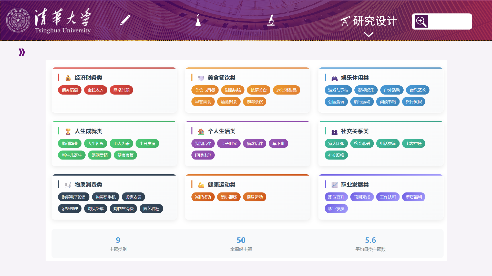
研究背景
文献综述 问题提出 研究设计
研究二 幸福活动模型：真实幸福活动基本类型提取
研究进展
主题的关键词相似性聚类结果
19
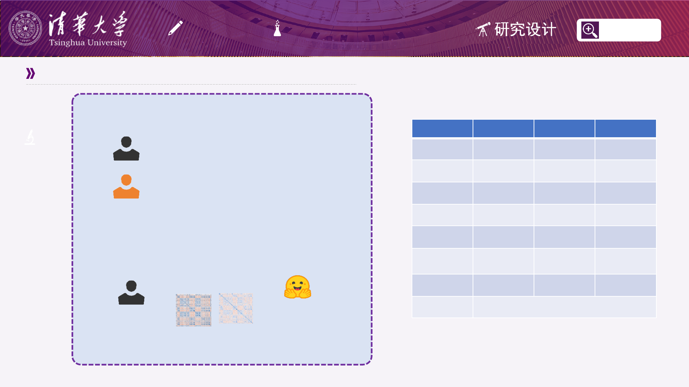
研究背景
文献综述 问题提出 研究设计
后续研究
后续研究
研究三 幸福活动-体验映射关系跨文化比较
研究二中国被试
对N类幸福感主题
进行M维度1-5评分
幸福事件中文嵌入
将N类幸福感主题
和M维度主题
转为embeddings
表征相似性分析
嵌入可代替性验证
召集中国和美国被试
对N类幸福感主题
进行M维度1-5评分
通过RDM的相关系数
判断是否可以用嵌入代替评分
研究问题：中英文被试对"与朋友聊天"
在社会支持维度的评分是否存在差异？
• 中文被试 (n=50)：均值 = 6.2，标准差 =
0.8
• 英文被试 (n=50)：均值 = 5.4，标准差 =
1.1
• t(98) = 4.12, p < 0.001
• 结论：中文被试认为与朋友聊天提供的
社会支持感显著更强
研究一 研究二 研究三
2025.06
完成研究一
2025.07
进一步收集幸福
感测量理论
2025.08
尝试多种参数优
化研究二结果
2025.09
发放问卷
2025.10
对问卷结果进行
分析
2025.11
验证嵌入替代人
类评分
2025.12
生成多个文化下
的嵌入研究
2026
进行论文撰写
20
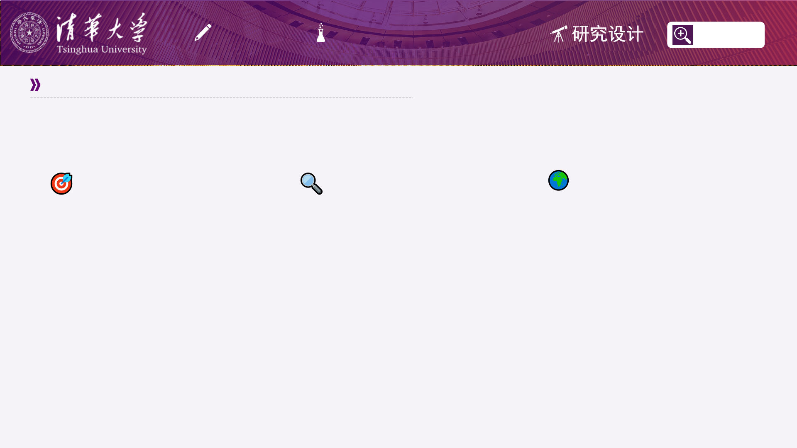
研究背景
文献综述 问题提出 研究设计
研究价值
后续研究
幸福感测量维度整合
运用自然语言处理技术，将原有
192种幸福感测量维度智能整合为
12个核心构念。通过主题建模，识
别概念重叠与冗余，实现测量工具
的精简。既保证了测量的全面性，
又提升了测量的实用性。
幸福活动主题识别
基于大数据分析和NLP技术，对海
量幸福体验文本进行主题建模，揭
示了给人们幸福感的活动的50种不
同主题，并生成了9个活动类型，为
理解真实生活中幸福感的来源提供
数据支持。
跨文化幸福活动-体验
映射模型
构建活动与幸福体验的映射关系模
型，发现不同文化背景下的幸福体
验差异。该模型为文化适应性的幸
福干预提供精准指导，实现个性化
幸福提升方案。
21
请各位老师批评指正！